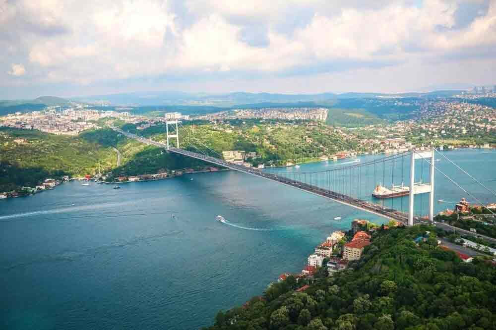

The Most Beatiful City
Istanbul is a city that straddles Europe and Asia across the Bosphorus Strait. Its Old City reflects cultural influences of the many empires that once ruled here. In the Sultanahmet district, the open-air Hagia Sophia, a former church and mosque, features a soaring dome and Christian mosaics. The Topkapi Palace was the lavish residence of Ottoman sultans. The bustling Grand Bazaar market has thousands of shops.